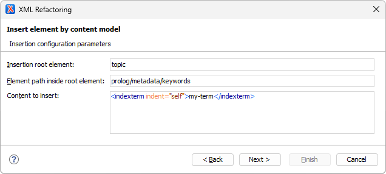
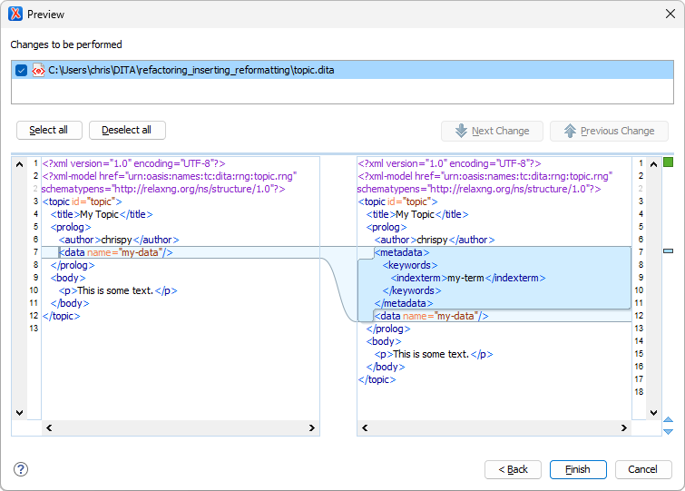

Inserting and Reformatting Content in Refactoring Operations
In Oxygen, refactoring operations are a powerful way to provide content modification functionality to users. This blog post describes some challenges that can occur when adding, changing, or deleting content. It also provides solutions that you can use in your own refactoring operations.
Re-indenting XML After Content Updates
In XSLT, all document content is represented by a node (elements, attributes, text, comments, and so on). In fact, even the whitespace text surrounding indented elements are explicit text nodes in the document.
In the figures below:
-
Notable space characters are represented by the Unicode "U+2420: Symbol For Space" (
␠) character. -
Notable line-end characters are represented by the Unicode "U+240A: Symbol For Line Feed" (
␊) character.
When you delete an element node in a refactoring operation, any preceding or subsequent text nodes are left in place:
When you insert a new element node before or after an existing element node, no new indenting whitespace is added (unless the refactoring operation explicitly inserts it):
The test case below provides a mode="indent-stuff" template mode
that looks for @indent attribute directives (they are removed as
part of the reformatting process).
In the following example, the indent-reformatting template is applied around a
<p> deletion:
In the following example, the indent-reformatting template is applied to
<p> insertions:
The @indent attribute contains a space-separated list that supports
the following values:
-
self- Reformat indenting whitespace before the current element (and after, for the last child of a parent). -
adjacent-siblings- Reformat indenting whitespace before the preceding and following sibling elements (and after, for the last child of a parent). -
siblings- Reformat whitespace around all sibling elements in the same parent element. -
children- Reformat whitespace around all child elements. -
deep- Reformat whitespace around all child and descendant elements.
The @indent attribute allows you to control the scope of content
change so that the revision control change footprint can be controlled.
The mode="indent-stuff" template works as follows:
-
Different files can have different indenting width conventions.
-
The template uses the most common indenting value (the statistical mode) in each file.
-
-
Elements inserted in a block context (i.e.
<p>) should be indented, but elements in an inline context (i.e.<codeph>) should not.-
Some elements (i.e.
<indexterm>) should be treated as block or inline elements based on their context (such as when they are in<prolog>or<p>).
-
-
There might or might not be existing indenting whitespace around an element, and it might or might not be correct.
-
Indenting is added or repaired as needed.
-
-
The last child element of a parent element requires one less indent level before its parent's closing tag.
To determine where indenting is appropriate, the stylesheet defines
inner-tag-type and outer-tag-type XSLT3 maps
that indicate the expected type of content at the inside and outside of each
element's tags. Possible values are block (block elements),
text (text content or inline elements), or an empty string
(unknown or ambiguous content type). For example:
| Element | outer-tag-type |
inner-tag-type |
|---|---|---|
body |
block |
block |
p |
block |
text |
ph |
text |
text |
menucascade |
text |
block |
indexterm |
'' (empty string) |
text |
entry |
block |
'' (empty string) |
For elements with unknown or ambiguous content types at the tag boundaries, the stylesheet applies heuristics to guess the indentation needs.
To view the XSLT stylesheet without downloading the test case, click on the following link:
There are comments in the code to explain how it works.
Considering Content Models During Content Insertion
When inserting new content, the changes should not introduce any DITA content model
(schema) violations. Some DITA content models require a specific element ordering.
For example, the content model for <prolog> is:
<prolog>=-
<author>*,<source>?,<publisher>?,<copyright>*,<critdates>?,<permissions>?,<metadata>*,<resourceid>*, (<data>|<data-about>|<foreign>|<sort-as>|<unknown>)*
Commas in the content model indicate an ordering requirement. For example, a
<resourceid> element must be inserted after its preceding
elements and before its following elements.
The test case below provides a mode="insert-stuff" template mode
that inserts content at a specified element path inside the selected element.
In the following example, the content-insertion template is applied to a
<topic> element to insert a
<resourceid> element in a <prolog>
element:
In the following example, the content-insertion template is applied to a
<topic> template to insert an
<indexterm> element using a multiple-level insertion
path:
The mode="insert-stuff" template works as follows:
-
The
pathparameter can be a sequence of element name strings, a path string value using slash ("/") separators, or a mix of both.-
An empty string or sequence value inserts the content directly into the applied element.
-
-
New elements are inserted into existing elements using content model information.
-
The template creates or reuses intermediate element levels as needed, considering content models along the way.
-
-
New elements created by a
@pathspecification have a default@indentvalue ofself.You can override the default
@indentvalue by specifying theindentparameter with themode="insert-stuff"template. For example:-
Setting
indentto"self adjacent-siblings"reformats content more aggressively around newly created intermediate elements. -
Setting
indentto an empty string value disables reformatting for newly created elements.
-
-
The insertion content itself is not indented unless it has explicitly defined
@indentattributes. -
Only simple ordered-list content model modeling is supported.
To view the XSLT stylesheet without downloading the test case, click on the following link:
There are comments in the code to explain how it works.
Example Test Case
The following Oxygen project provides the moded templates described earlier, along with an example refactoring operation that demonstrates their use:
refactoring_inserting_reformatting.zip
Specifically, it provides the following:
-
frameworks/dita/refactoring/util-indent.xsl
This stylesheet file defines the
mode="indent-stuff"template.The
outer-tag-typeandinner-tag-type XSLT3maps are defined at the top of the file. You can update or add to these as needed. -
frameworks/dita/refactoring/util-insert.xsl
This stylesheet file defines the
mode="insert-stuff"template.The
content-modelsmap is defined at the top of the file. Only<prolog>-related content models are defined in this test case. You can add to these as needed. -
frameworks/dita/refactoring/insert-by-content-model.xml
frameworks/dita/refactoring/insert-by-content-model.xsl
This Oxygen refactoring operation allows you to interactively experiment with content insertion and reformatting. It includes and uses both of the stylesheets above.
To try out the example refactoring operation:
-
Open the OPENME2.ditamap file in the DITA Maps Manager.
-
Open "My Topic" (topic.dita) in the Oxygen editor.
-
Right-click in the topic editing window, then choose .
-
For the configuration parameters, enter the following:

-
When you preview the refactoring operation, the results should be as follows:
